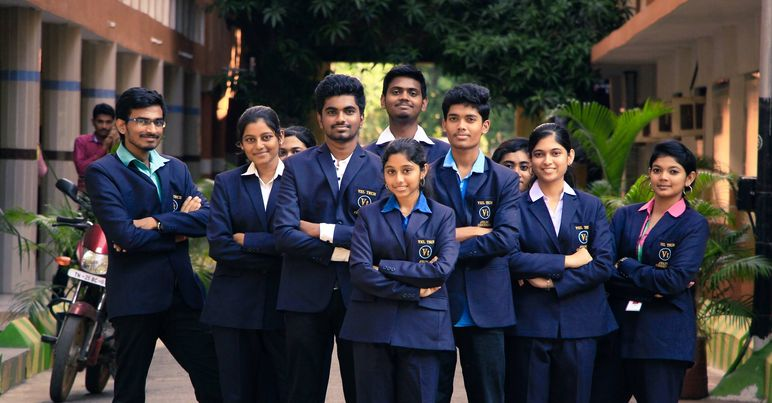

Learning by Doing is the practice of academic at Vel Tech. The balancing of analytical diligence with practical, makes them curious, fascinate and keep in motion towards solving real world complex problems to serve society at large and become passionate doers.The School pioneers world-class centre of excellence in education and Research through collaborative, consultative and participatory approaches to nurture effective capabilities for the development of high quality technical and scientific manpower to meet the challenges of the knowledge era. The sustained effort of the School is to produce graduates with potential to design and develop systems involving the integration of software and hardware devices; innovative approaches to programming and problem solving as well as creative ways to use computers; large scale software systems; and computing infrastructure of an organization. The best infrastructures including domain-specific labs, associated with the above technical divisions are sponsored by Industry leaders complimenting the academia  The School pioneers world-class centre of excellence in education and Research through collaborative, consultative and participatory approaches to nurture effective capabilities for the development of high quality technical and scientific manpower to meet the challenges of the knowledge era. The sustained effort of the School is to produce graduates with potential to design and develop systems involving the integration of software and hardware devices; innovative approaches to programming and problem solving as well as creative ways to use computers; large scale software systems; and computing infrastructure of an organization. The best infrastructures including domain-specific labs, associated with the above technical divisions are sponsored by Industry leaders complimenting the academia Prof. Dr.V. Srinivasa Rao Dean-School of Computing I provide a cross-over learning experience via industrial exposure, and this has enabled me to witness students gaining depth on their subjects. Prof. Dr. V. Srinivasa Rao obtained his M.Tech (Computer Science &Tech) from Andhra University in 1998 and Ph.D. (Computer Science and Engineering) from Berhumpur University in 2009. Prior to this, he served as professor in Computer Science & Engineering department in reputed institutes for more than two decades. He has a total teaching experience of 30 years and also a distinguished academician whose advanced research in the field of Image processing, Video Analytics, Bioinformatics and Data Mining algorithms.